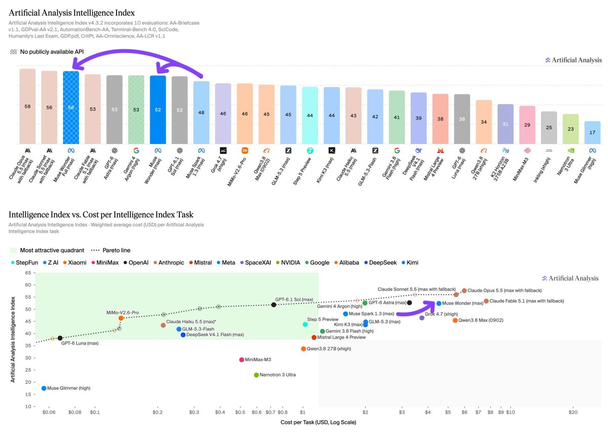
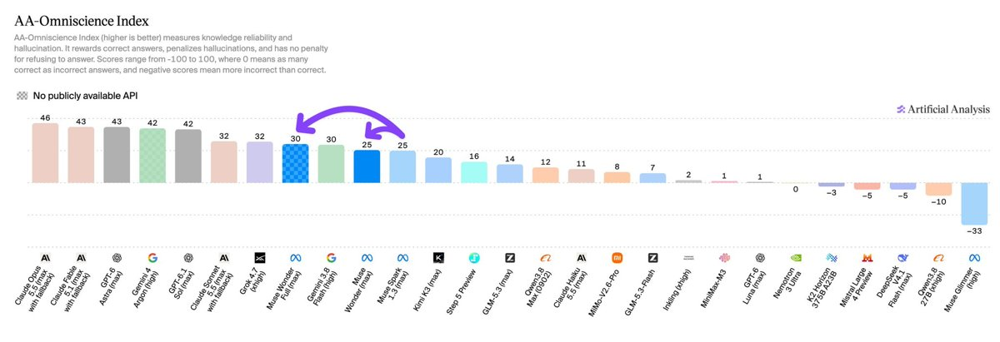
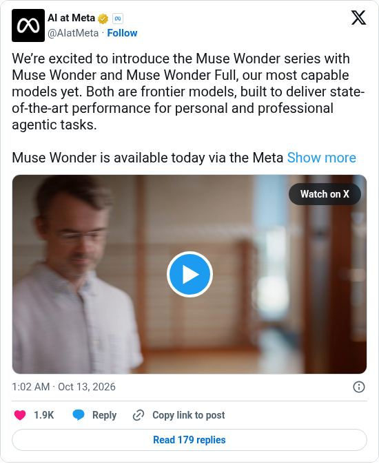

01
🔥 重点模型发布▲ HN 636 · 339 评论头部厂商XAnadolu
Meta 发布前沿模型 Muse Wonder 系列
Meta 推出 Muse Wonder 和 Muse Wonder Full，主打长时间运行的智能体任务和编程，带有 Active Memory（跨对话记忆）和 Active Focus（遇到阻碍时换方法继续做）。Muse Wonder 已通过 Meta Model API 和 Muse Code 开放，Full 版需要付费订阅，起价 50 美元/月。
定价API：每百万 token 输入 $4 / 缓存输入 $0.20 / 输出 $20；Muse Wonder 每个 AA 评测任务约 $4.52（Muse Spark 1.3 为 $1.60）来源


评测数据明细（5 项）
第三方AA Intelligence Index v4.3Full 56 · Wonder 52Muse Spark 1.3：48第三方CritPt33%（第 1）Muse Wonder Full第三方GDPval-AA v2.11857 Elo（第 2）Muse Wonder Full第三方SciCode63%（第 3）Muse Wonder Full第三方AA-OmniscienceFull 30 · Wonder 25Claude Opus 5.5：46 · GPT-6 Astra：43